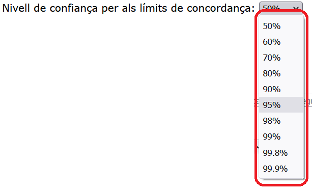
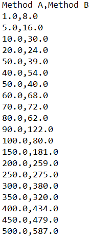
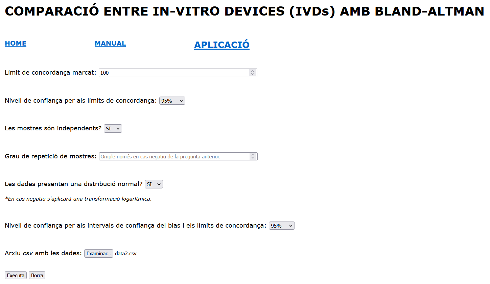
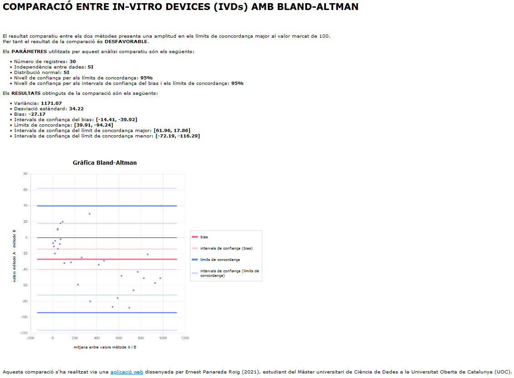

L’aplicació realitza una comparació entre dos mètodes o productes mèdics (medical devices en anglès), a partir de les dades introduïdes i els paràmetres marcats inicialment.
Els paràmetres que s’han de definir prèviament són els següents:
I només quan aquests paràmetres estan ben definits, es pot executar el procés de comparació.
En aquest espai s’ha d’introduir el límit de concordança màxim a acceptar. És a dir, prèviament a la comparació s’ha (o s’hauria) de saber sota quina amplitud dels límits de concordança es donarà la comparació com a favorable, acceptant que els dos mètodes com a equivalents.
El valor a introduir ha de ser l’amplitud dels límits de concordança, és a dir la diferència entre el límit major i inferior. En cas de estar per sota del valor marcat, la comparació donarà el resultat de favorable, en cas contrari, desfavorable.
Tanmateix, si no es disposa d’aquest valor en el moment de realitzar la comparació, es pot introduir qualsevol valor numèric, i la comparació s’executarà igualment, retornant tots els resultats d’aquesta. Ara bé, indicarà que el resultat és desfavorable.
En aquest cas s’ha d’escollir un valor d’entre els que es donen com a opció. S’ha d’escollir el nivell de confiança sobre el que calcular els límits de concordança, és a dir, sobre quin percentatge de la població es consideren les dades introduïdes.
Si es consideren el 5% (com és el cas habitual), s’ha de prendre el 95% (100 - 5) per aquest valor.
Tot i que el més habitual és prendre el 95% de confiança, es dona l’opció de prendre els següents: 50%, 60%, 70%, 80%, 90%, 95%, 98%, 99%, 99.8% i 99.9%.
Per poder introduir aquest paràmetre, és necessari conèixer la naturalesa de les dades. Ja que la fórmula a aplicar en la comparació varia segons si cada mostra correspon a un individu diferent, o bé si un individu està representat varies vegades en cada mesura, és un paràmetre realment important. Aquest indicador és una de les principals causes d’estudis incorrectes utilitzant Bland-Altman, així que més val indicar-ne el seu valor correctament.
En cas de que les dades presentin dependència, que hi hagi varies mostres per un mateix individu, s’ha d’indicar el grau de repetició d’aquestes mostres. És a dir, que si posem un cas en que tenim 100 mostres/registres, dels quals se n’han mesurat 5 per pacient, el valor a introduir aquí és 5. Aquest valor és el número de vegades que un individu és representat en les dades.
És possible que hi hagi casos en que la repetició no sigui constant. Per aquests casos s’ha de calcular la mitjana de repetició i introduir aquest valor.
La normalitat és un paràmetre que pot marcar la validesa o no de la comparació a realitzar. Aquesta aplicació no ha contemplat un estudi sobre dades no normals de manera contundent.
Així doncs, en cas de que les dades presentin una distribució normal, s’indicaria aquest paràmetre com a “SI”. Així mateix, en cas que s’indiqui el contrari, s’aplicarà una transformació logarítmica als valors corresponents a la diferència (els valors resultants de restar els resultats obtinguts en cada mètode per a totes les mostres) amb la intenció de solucionar aquest problema. Tot i això, és possible que aquesta acció no sigui suficient i la comparació segueixi sent invàlida. Aquesta decisió s’ha de prendre en base a la gràfica que es retorna.
Igual que en el punt 2, aquí s’ha d’escollir el valor desitjat del nivell de confiança, en aquest cas, per calcular els intervals de confiança del bias i dels intervals de concordança.
Els valors que hi ha com a opció, i el seu significat, es poden trobar en el punt 2.
L’última part a emplenar del formulari abans de poder executar la comparació, és introduir l’arxiu amb les dades sobre les que aplicar la comparació.
Aquest arxiu ha de ser en format csv (coma separated values), no accepta cap més separador que no sigui una coma “,”. A més, el programa també contempla que l’arxiu té un capçal, és a dir que la primera fila es correspon al nom de cada columna, i no hi ha cap fila buida en tot el fitxer. El separador per a decimals ha de ser un punt “.”, i no hi pot haver cap element que no sigui un número amb només un o cap punt.
En resum, ha de contenir únicament dues columnes, amb títol a la primera fila, sense valors buits en cap fila, i únicament elements numèrics amb un o cap punt, i les columnes han d’estar separades únicament per una coma “,”.
Un cop amb totes els paràmetres ben definits, es pot procedir a executar el procés de comparació.
Aquí es pot descarregar un fitxer d’exemple, amb les dades sobre el quan s’han realitzat les imatges, per assegurar la correcte comprensió del funcionament de l’aplicació. Amb aquest fitxer i els paràmetres de la imatge anterior s'hauria d'obtenir el següent resultat:
